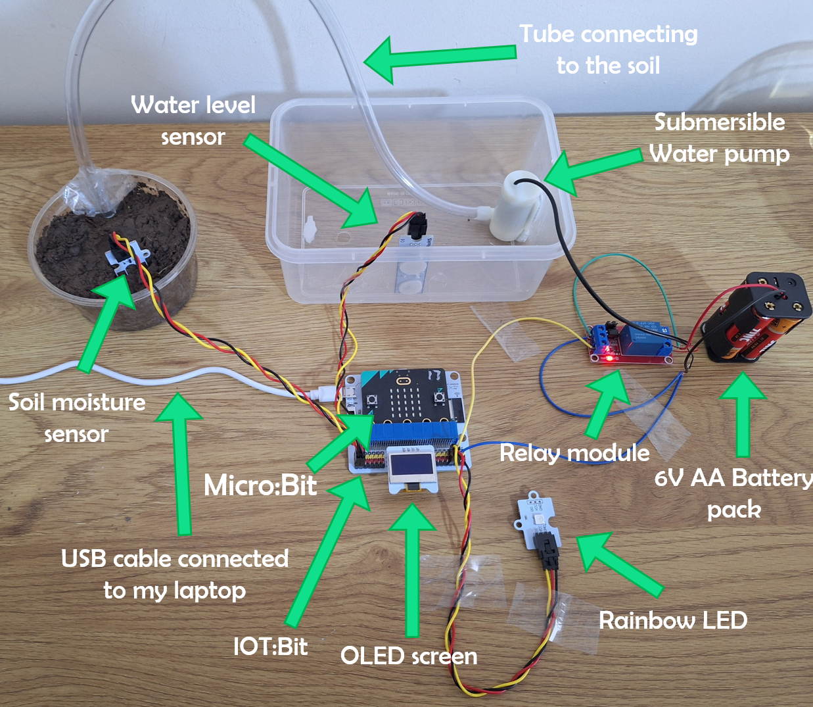
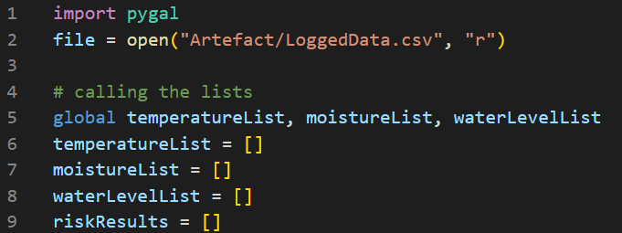
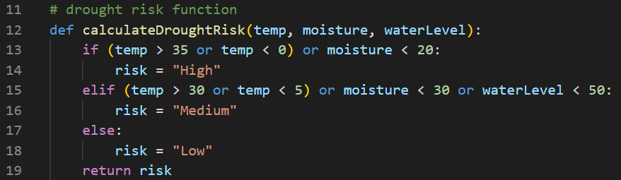
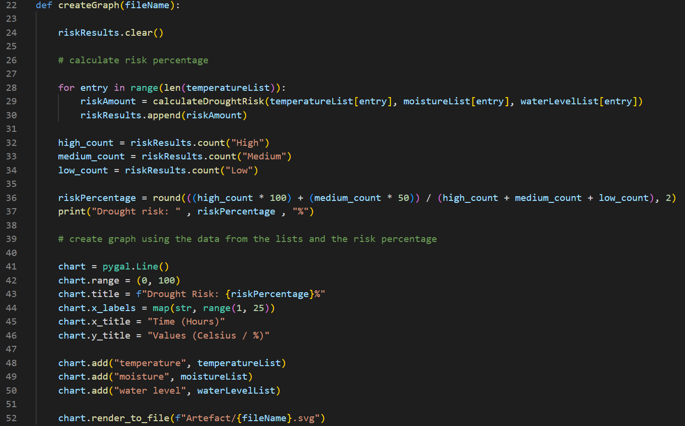
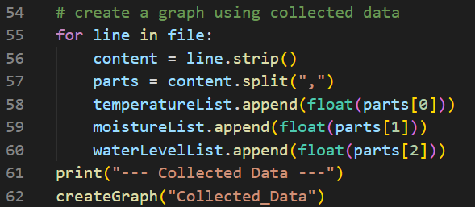
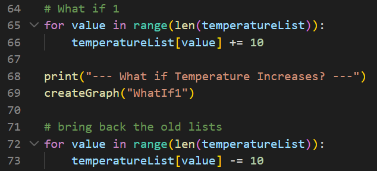
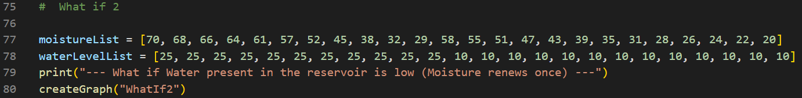
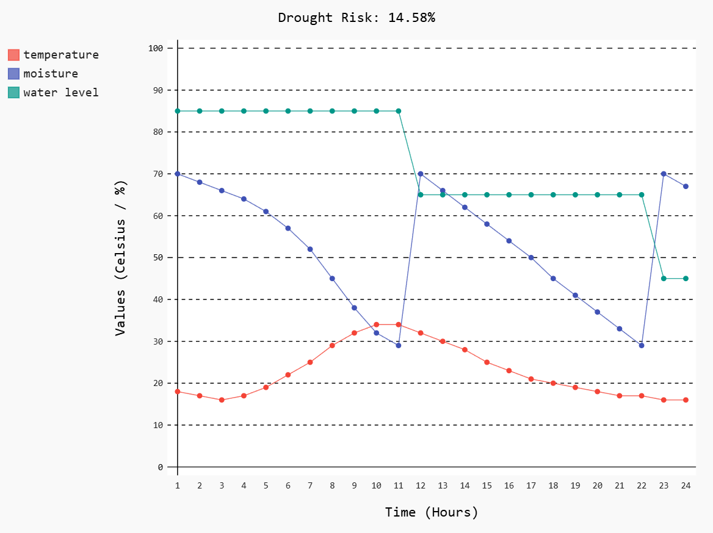
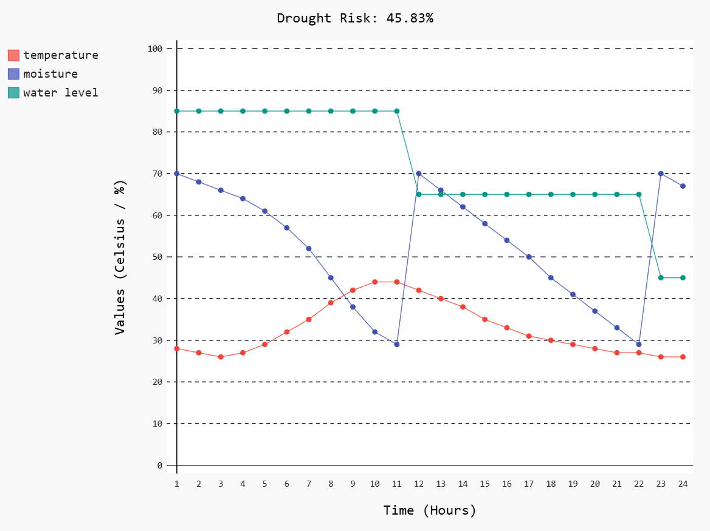
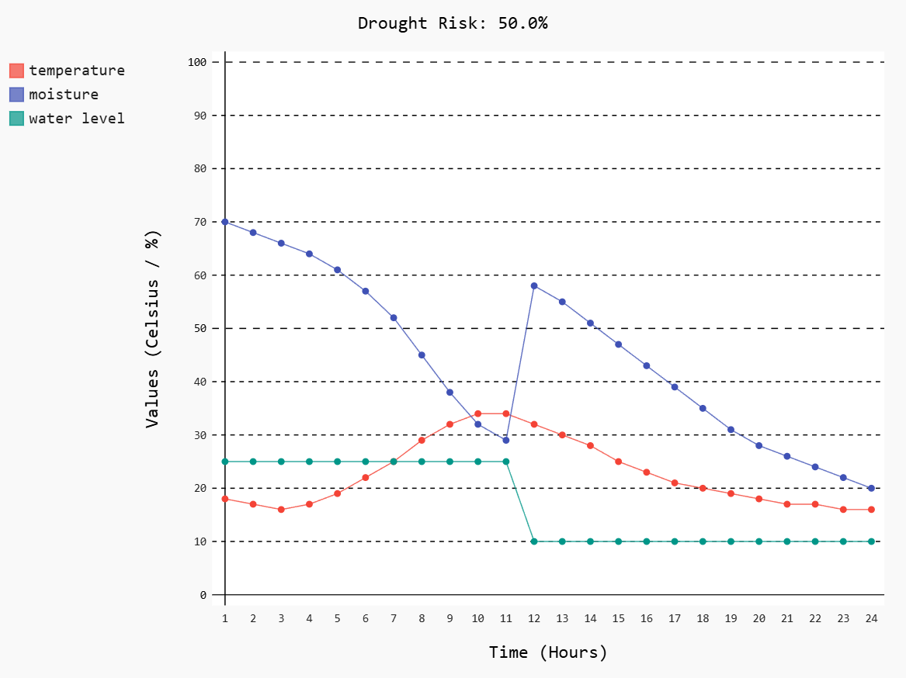

Meeting the brief
Investigation
From my understanding of the brief, I am required to create an embedded system that gathers data and uses it to simulate real-world processes related to forests and their effects on the world and areas around them, as well as modelling disasters, creating what-if simulations, and having an adaptive system.
I researched the ways forest ecosystems affect climate regulation, biodiversity, and the risks associated with forests, such as wildfires, extreme weather conditions, and diseases, etc. The following are the areas I researched and thought to be interesting:
- Drought Cycles.
- Wildfire Risk.
- Canopy Cover Changes.
Drought cycles cause trees to drop leaves, affect the timing of their fruiting and flowering, and overall tree productivity as they fight to survive and conserve water. Forests release vast amounts of vapour into the atmosphere through evaporation and transpiration, which in turn causes rainfall that falls into nearby forests and plants, which continues the cycle of rainfall in nearby areas. When this cycle of rainfall breaks, it causes forests to dry up, and that reduces evaporation, which reduces future rainfall.
Wildfires are extreme forest disasters, which start easily when forests are dry and continue burning due to the immense amount of fuel (trees, plants, and grass) present, and this produces vast quantities of CO₂. Wildfires pose a danger to humans and animals that could be caught up in the fire or inhale the hazardous CO₂, as well as posing a threat to the climate. Forest fires account for as much as 20 percent of global carbon emissions. If prevented, millions of tons of carbon emissions could be avoided.
The forest canopy is the upper layer of trees in a forest, it is crucial since it is where most photosynthesis happens, as well as being a habitat for approximately 50% of all living organisms and influencing broader ecological processes and climate regulation. A full canopy shades the forest floor, which keeps it cooler and moister. If the canopy is reduced, more sunlight reaches the forest floor, which can cause soils to dry or erode, as well as leading to a loss of carbon storage, overall affecting the entire ecosystem in the forest.
I then researched videos of existing solutions to the issues I highlighted. The first one I saw was an automatic watering system made using the Micro:bit. In the video, a soil moisture sensor, pump, and other electronics were used to create it, when the soil moisture was low the plant was automatically watered. The second one I saw was a Fire and smoke detection system with alarm using arduino, when the smoke sensor detected smoke it would show the smoke level on an LCD screen and when there was fire present it would say so on the screen. The last one i saw was using a Raspberry Pi camera system in order to monitor forest canopy changes.
Plan and Design
I wanted to create a good plan to follow so i can efficiently use the little time that i have. I created a simple Gantt chart with the tasks i intend to do during the duration of the 12 weeks.

Selection of Project:
When selecting the project there were 3 available options to pick from based on my research:
- Automatic Plant Watering System (Drought Risk)
- Smoke Detector with Water Sprinkling System (Wildfire Risk)
- Canopy Cover Alert System (Canopy Cover Changes)
For a drought risk I could make a system using a soil moisture sensor, a water level sensor connected to a water reservoir, and a temperature sensor in order to monitor a plant and when specific conditions are met like soil moisture is too low, a pump in the water reservoir would turn on to water the plant. for this i could use the micro:bit since it has a built in temperature sensor and 5x5 LED screen that I can use to display information.
For a wildfire risk i could create a system that would detect fire using a fire sensor(obviously), a smoke sensor, and a temperature sensor. When smoke is detected a buzzer would start going off and if there is too much smoke or if fire is detected, the system would turn on the sprinkler to extinguish the fire. For this I could use an arduino since it provides more 5v compared to the micro:bit's 3.3v and also because it has more pins allowing for more connections
For detecting changes in canopy cover I could use a Raspberry pi since it basically functions like a mini computer. I can include a camera that takes photos of the canopy every once in a while, the system will then analyze the image using binarization (making the image black and white), then counts the "black" pixels (trees) vs. "white" pixels (sky), giving a percentage. Then it would send a message or an alert wirelessly if there are big sudden changes.
After careful consideration, I decided to pick the automatic plant watering system since the Micro:bit is quite simple compared to the other choices. From studying computer science, I have plenty of experience using a Micro:bit. It also has many built in components, which will help. I didn't pick the smoke detector system as I have zero experience with the Arduino, and learning a new microcontroller will take a long time from my 12 weeks. Finally, I decided not to pick the canopy cover alert system since I think the Raspberry Pi is a bit overkill for the scope of this project.
Stakeholders:
The stakeholders for this would be myself since i obviously developed the system. other stakeholders include gardeners who might benefit from automatic watering systems, educators who might use this artefact to demonstrate forest environmental cycles, or anyone else who would use the artefact or distribute it.
End User needs:
End users would require the following from my system:
- Automated maintenance:
- Clear status monitoring:
- Safety:
- Ease of use:
Users require an automated system that waters plants, stores soil moisture and temperature values, and produces a graph to show how the plant is doing at any specific time or timeframe, with little to no manual interaction.
the system needs to show real time data on the OLED screen for the user to easily read the plant's condition.
The system must be reliable and safe for both the plant and the user at all times, whether the user is interacting with it or otherwise.
The system must be powered easily without requiring electrical knowledge from the user. It must also be easy to interface with, whether by reading the graphed water level or simply looking at the color of the rainbow LED.
Components Used:
The components I used are:
- Micro:Bit: The microcontroller.
- Iot:Bit: A micro:bit expansion board.
- OLED screen: displays values from sensors.
- Soil moisture sensor: Measures soil moisture.
- Water level sensor: Measures water level in the reservoir.
- Rainbow LED: Shows the danger level of a drought.
- Submersible water pump: Pumps water.
- water tube: Directs pumped water into the soil.
- Relay module: Switches the pump on or off.
- 6v AA Battery pack: Power the pump and relay.
- USB cable connecting to my laptop: Powers everything else.
Iot:Bit Pin interface drawing:

Components Flowchart:

Create
Key Milestones:
- Wiring and Connecting the Electronics:
- Making the Micro:Bit Code:
- Logging the Data:
- Testing the Embedded System:
- Programming the Disaster Risk Model and What-Ifs:
- Final testing:
- Creating the video and writing up the report:
Using the previously created components flowchart, I started connecting my components to each other using wires. I began without help at first, but after my components started making funny sounds, I decided that maybe I should learn how to correctly connect the components. After researching, I was able to successfully connect the components easily.
Here is an image showing the components while I was using the system:

I used block code to do most of the programming for the Micro:bit. I was wiring my components and programming simultaneously, since when I found any bugs in the middle of unit testing, I was able to quickly fix the code.
Micro:Bit code:

To log the data, I programmed the Micro:bit to send strings of data containing the values for moisture, temperature, and water level to my computer. I then created the Data_Logger.py script to receive these lines and save them into a CSV file using the same format.
Data_Logger.py script:

I then tested the whole embedded system with the data logger script. I started by testing the buttons and ensuring the values were displayed on the OLED screen and the Micro:bit's 5x5 LED screen. Then, I tested the conditions for the Rainbow LED. Afterwards, I began testing the advanced requirements by checking the conditions for the pump to turn on. Finally, I verified that the Micro:bit sends data through the USB and that it is correctly received by the data logger script.
I then started programming the Disaster Risk Model. I chose the disaster to be a drought as it aligned best with my research. I used Pygal, which is an open source Python library used for creating interactive charts and graphs, to represent my gathered values after putting them through the model. I then tested two distinct What-If scenarios and generated graphs for them as well so I could see the difference between the values.
I tested the embedded system and the data logger script again to check that everything still worked. Afterwards, I used the values to plot the graph using my model and then fixed all the bugs I encountered during the process.
I had no experience with video editing other than one time 2 years ago. I used a software named DaVinci Resolve since it was free and easy to use, using it I edited all the videos that I recorded on my phone. I also used PowerPoint to create some parts of the video. Finally, I added the video and all the images and finished writing up this report.
Testing:
I used unit testing throughout my development process to ensure that every individual component and feature functioned correctly in isolation. At the very end, I performed a full system test to make sure that all parts worked together perfectly. Finally, I double checked the entire project to ensure it aligned with the requirements of the brief before moving on to complete my report.
Encountered problem:
I encountered many issues that slowed me down greatly, but there was one that made me waste around six hours. I was first planning on using a humidity sensor for a third input so I would be able to monitor the surroundings of the plant. However, at the time, I didn't know that although the IoT:bit gives extra pins for connectivity, only two of them could be used for my sensors, as the others worked terribly with them or didn't work at all. The reason was that the Micro:bit uses some of these pins for its built-in functions, like the LEDs or buttons. It took me a while to find the issue, but the way I found it was by removing all the components and changing the location of the pins. Doing that, I found out that some pins worked and some didn't. That is when I searched for the IoT:bit pin interface online. I was mad that I had to remove the sensor, alter all of my programs, and then re-record all my videos.
Disaster Risk Model:
The Disaster_Risk.py script first imports Pygal, opens the CSV file, and then calls the lists that will be used.

Afterwards, it defines the calculateDroughtRisk() function. This function takes in three values: (temp, moisture, waterLevel). If the first condition is satisfied, it will return the risk as "High." If the second condition is satisfied, it will return the risk as "Medium." Otherwise, it will return "Low."

It then defines the createGraph() function. Firstly, this function uses the calculateDroughtRisk() function to calculate the risk using the values from the lists. It then converts the risk into a percentage and finally creates a graph using all the values, including the risk percentage.

The script will then use the createGraph() function to make a graph of the values gathered by the embedded system.

For my first what-if, I wanted to know what would happen if the temperature increases. So, I increased all values in the list by 10.

For the second what-if, I wanted to find out what would happen if this time there was a little water left in the reservoir. So, I manually changed the values in the lists.

I then compared the graphs and what I gathered was that, in terms of drought risks, water moisture is more important than temperature since the disaster risk was overall higher for the second what-if.
Gathered Data Graph:

What-if 1 Graph:

What-if 2 Graph:

Evaluation
I was quite happy with the final artefact I created. It was my first time making a complicated embedded system, and I think I did a great job. I had to learn how to wire electronics together and how to use a relay module to connect a pump. I also learned that the pump requires a more stable current and more voltage than the Micro:bit could supply, so I had to use a separate battery pack. I didn't have much experience with the hardware side of the Micro:bit; I never even knew it could use more than the three pins on it before starting this project. Other than almost flooding my electronics twice, I didn't have many problems with the embedded system. I actually found programming the model easier than programming the Micro:bit. Overall, I learned many new things. Before this, I never enjoyed working with embedded systems since I didn't feel I had control over them, but I'm sure this won't be the last time I work with one.
Improvements:
There are many ways I could have improved this project, such as using an Arduino instead of a Micro:bit. Even though the Micro:bit has a built-in temperature sensor, it cannot connect to as many electronics. Even using the IoT:bit, I wasn't able to use all the pins I needed because many are used for built-in functions like the 5 x 5 LED screen. Because of that, I was unable to use a humidity sensor, which I tried to implement until the last three weeks when I decided to remove it. Another improvement is time management. Even though I made a Gantt chart, I didn't use it much; I only followed it for the first few weeks. I could further improve this design by ensuring the user receives a notification when the water reservoir is empty or when the danger level is too high.
References
Drought Impacts to Tropical Forest Ecosystems in the U.S. Caribbean
New Study Reveals Source of Rain is Major Factor Behind Drought Risks for Farmers
Preventing wildfires with a small sensor
Forest Canopy
Micro:bit Automatic Plant Watering System
Fire and smoke detection system with alarm using arduino
Constructing a Raspberry Pi Camera System for Forest Canopy Monitoring
elecfreaks: Iot:Bit
pygal
word counter
Summary word count
| Section | Word Count |
|---|---|
| Meeting the brief | 0 |
| Investigation | 473 |
| Plan and design | 719 |
| Create | 943 |
| Evaluation | 320 |
| Total | 2445 |